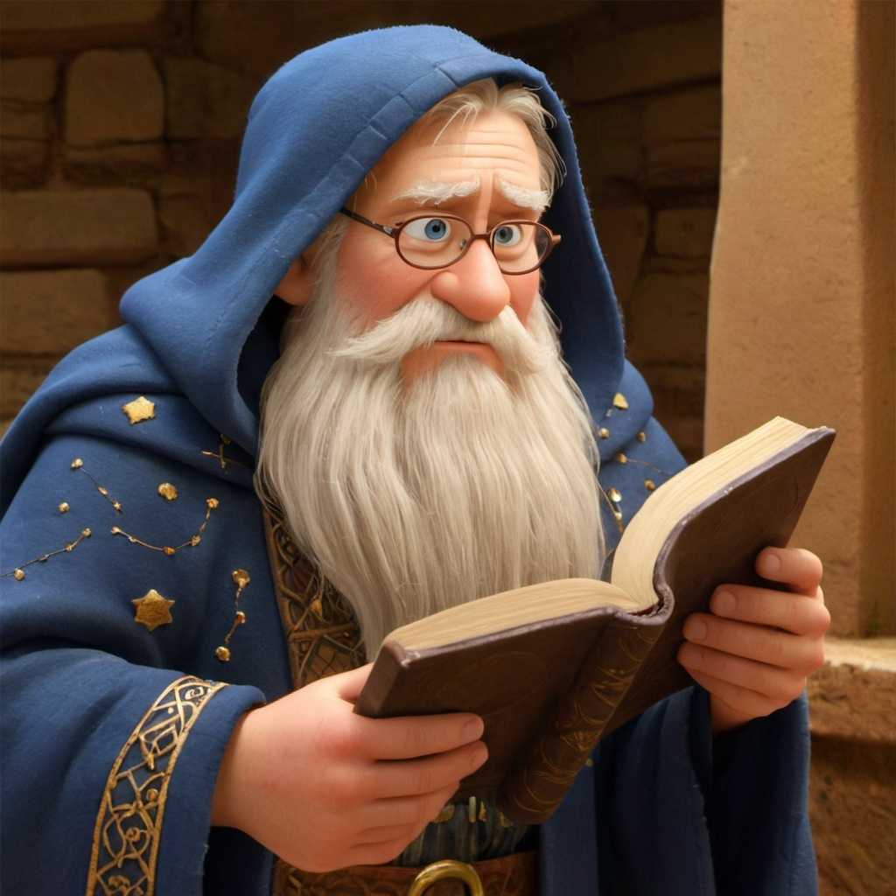
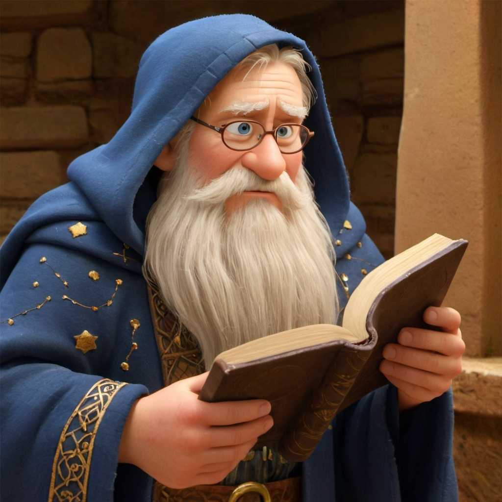
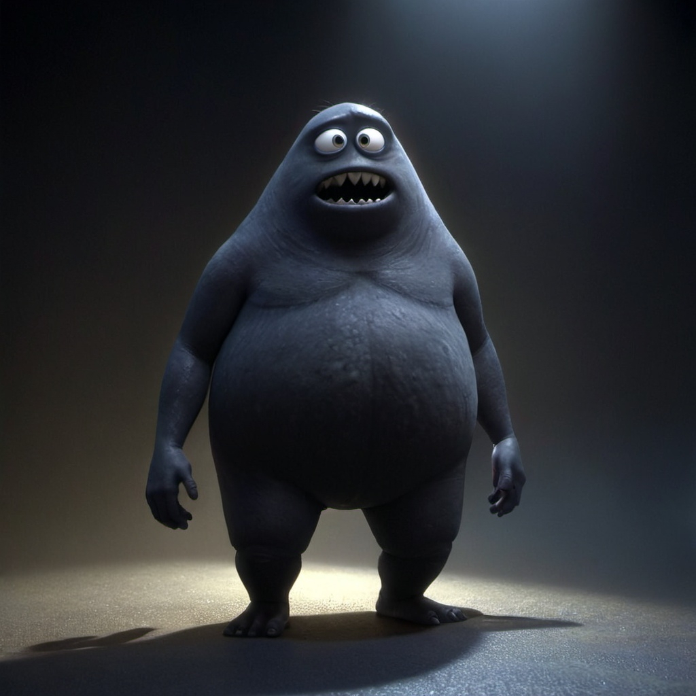
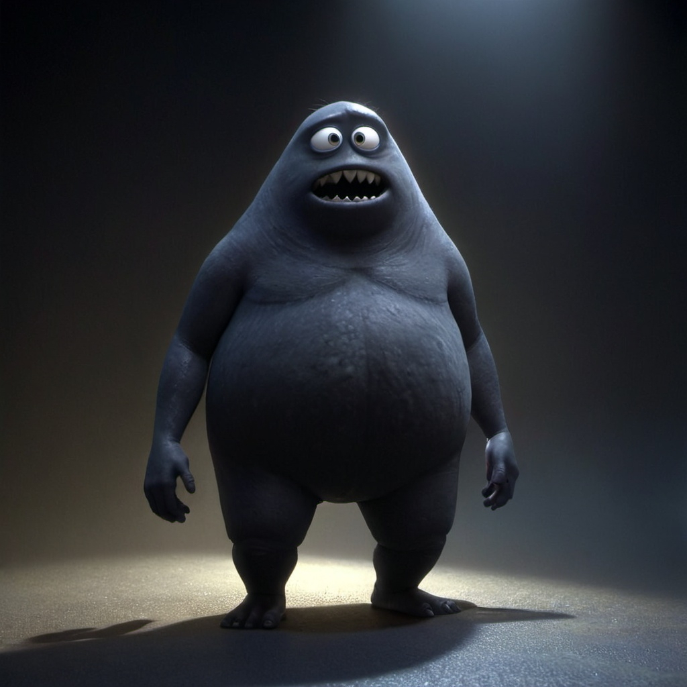

Част 2:
Пътят към Огледалното езеро
Лина прекрачи през прохода, който златната сфера разкри, и въздухът се промени – стана хладен и наситен с мирис на мокра земя и далечна буря. Гората около нея беше по-тъмна, сякаш светлината избягваше това място. Дърветата растяха плътно едно до друго, а клоните им се протягаха като пръсти, готови да я спрат.
Тя стисна златната сфера и тя засия по-ярко, разпръсквайки сенките. Всеки неин полъх на светлина разкриваше древни символи, издълбани в дърветата – предупреждения на език, който не разбираше, но усещаше, че са важни. Лина не се спря да ги разчете. Времето я притискаше, а Сянката не бе далеч.
След известно време стъпките й я отведоха до широка поляна, в чийто център се издигаше кръгъл камък, покрит с мъх и странни резби. Надпис, почти заличен от времето, проблесна под светлината на сферата:
„Само истинският пътник може да премине, но всеки поглед назад ще те обрече.“
Лина пристъпи напред, но едва беше докоснала камъка, когато земята под краката й потрепери. Поляната започна да се разширява, а около нея се оформиха три различни пътеки. Всяка беше различна – първата бе застлана с черен камък, втората беше покрита с бледосини цветя, които сякаш пулсираха със собствена светлина, а третата изчезваше в гъста, мрачна мъгла.
Лина се поколеба. В ума й изплуваха думите на Дядо Гаврил: „Ако светлината в сърцето ти е чиста, ще откриеш пътя.“ Тя затвори очи и остави златната сфера да я води. Лекото ѝ сияние трепна към пътеката с бледосините цветя.
— Добре тогава — прошепна Лина и тръгна по нея.
Срещата с Пазителката на ПаметтаПътеката я отведе до каменен мост, който се извисяваше над черно, неподвижно езеро. Водата му бе толкова гладка, че приличаше на стъкло. Лина прекоси моста, но точно преди да стигне другия край, чу шепот.
— Търсиш нещо, което не трябва да намираш.
Гласът беше мек, но в него имаше тежест, която накара сърцето ѝ да забие по-силно. В сянката на моста стоеше жена с дълга сребриста коса и роба, обсипана със звезди. Очите й светеха като луната, а в ръката си държеше тънък жезъл, върху който бяха преплетени сребърни нишки.
— Коя си ти? — попита Лина, като стисна сферата по-силно.
— Аз съм Пазителката на Паметта. Никой не преминава без да даде нещо в замяна — отговори жената, като направи крачка напред. — Искаш да стигнеш до Огледалното езеро, но то взима толкова, колкото дава.
— Какво трябва да дам? — прошепна Лина.
— Спомен. Най-ценния ти спомен — отвърна Пазителката. — Но внимавай какво избираш. Някои спомени, щом се изгубят, никога не се връщат.
Лина замълча. Спомни си нощите, когато баба ѝ я люлееше в креслото и ѝ разказваше истории за изгубени светове. Спомни си първия път, когато чу камбаните. Но най-силно я болеше мисълта да загуби спомена за майка си, която бе изчезнала, когато Лина беше съвсем малка.
— Не мога да ти дам най-скъпото си — каза тя решително.
Пазителката я изгледа внимателно, после се усмихна с тъжна усмивка. — Тогава вземи това — каза тя и ѝ подаде сребърна монета. — Това ще плати цената на пътя ти, но помни — ще трябва да върнеш дълга.
Лина прие монетата и продължи напред, като усещаше как тежестта ѝ пари в дланта.
Преминаването през Огледалния Праг
Най-сетне стигна до ръба на езерото. Повърхността му беше гладка и студена като лед. В самия му център, точно под водата, проблясваше нещо – светлина, различна от всичко, което бе виждала досега.
— Звездният камък — прошепна тя.
Лина се наведе и потопи ръката си в ледената вода. В момента, в който пръстите ѝ докоснаха повърхността, отражението ѝ се промени. Тя не виждаше себе си – вместо това в огледалната повърхност се появи образът на Сянката.
— Мислеше ли, че можеш да се измъкнеш? — прошепна гласът му. — Истината не е за смъртните.
Преди Лина да успее да реагира, отражението се протегна и черна ръка стисна китката ѝ. Тя извика, но не пусна златната сфера. Светлината й пламна по-ярко и черната ръка започна да се разпада.
— Не можеш да ме спреш — извика Сянката, но гласът му бе по-слаб.
С усилие Лина се издърпа назад и се хвърли в езерото. Ледената вода я погълна, а светлината на сферата я поведе надолу. Очите ѝ горяха от студ, но не спираше. И тогава го видя – малък, съвършено гладък кристал, който блестеше като миниатюрно слънце.
Лина протегна ръка и обви пръсти около Звездния камък. В момента, в който го докосна, усещането за студ изчезна. Сферата в ръката й угасна, а камъкът засия с мека, топла светлина.
Изплува на повърхността, задъхана и премръзнала. Сянката бе изчезнала, но знаеше, че това не е краят.
Когато излезе на брега, Лина погледна камъка в ръката си. Той бе по-малък от очакваното, но в светлината му проблясваха звездни съзвездия, които се движеха.
— Това не е просто камък — прошепна тя. — Това е ключ.
Но въпросът остана – към какво? И защо Сянката го искаше?
Лина стисна камъка в дланта си и се обърна към гората. Пътят ѝ не беше приключил – напротив, истинската загадка едва започваше.
Лина стисна Звездния камък в дланта си. Светлината му пулсираше, сякаш бе живо същество, което усещаше тревогата ѝ. Студът на Огледалното езеро все още се прокрадваше по кожата ѝ, но нещо по-дълбоко от страха я тласкаше напред.
Тя не знаеше какво точно бе отключила, но усещаше, че Сянката няма да спре, докато не ѝ го отнеме. Мъглата около езерото се сгъстяваше, а мрачните дървета сякаш шепнеха на непознат език. Лина пое дълбоко дъх и се обърна към пътеката обратно към Кулата на изгубените звезди.
Докато крачеше, златната сфера в ръката ѝ потрепери и изпрати тънък лъч светлина напред, очертавайки пътя в мрака. Но с всяка крачка усещаше как нещо невидимо я следва.
„Не си сама…“
Гласът на Сянката се разнесе в съзнанието ѝ – студен, безплътен и натрапчив. Лина не се спря. Знаеше, че няма време за страх.
Завръщане в Кулата
Когато стигна до Кулата на изгубените звезди, вратата вече бе открехната. Сърцето ѝ се сви – нещо не беше наред. Лина се изкачи по въжените мостове и стигна до върха, където я чакаше Дядо Гаврил. Но той изглеждаше променен – лицето му бе бледо, а очите му не блестяха както преди.
— Закъсняваш, Лина — прошепна той, но гласът му беше по-дълбок, по-суров.
Лина замръзна. Светлината на златната сфера затрептя и изчезна. Тя разбра – Сянката вече беше тук.
— Какво направи с него? — прошепна тя.
Сянката се засмя – звукът беше като скърцане на стари врати. Дядо Гаврил се изправи, но движенията му не бяха неговите – бяха резки и неестествени.
— Не всеки, който влиза тук, излиза същият — каза Сянката през устните на стареца. — Дай ми камъка и може да си тръгнеш.
Лина стисна камъка още по-силно. Знаеше, че ако му го даде, всичко ще бъде загубено.
— Никога — отвърна тя.
Сянката изсъска и мракът около нея се сгъсти. Но точно тогава, нещо в дланта ѝ се нагорещи – Звездният камък започна да свети, изпращайки сребърни лъчи, които разкъсаха тъмнината.
— Не можеш да ме спреш! — изкрещя Сянката, но Лина усети, че светлината ѝ е по-силна.
— Не аз… а той.
Светлината от камъка се изля върху Дядо Гаврил и за миг мракът се разпадна. Старецът се срина на земята, а Сянката изпищя и се отдръпна назад, губейки форма.
— Това не е краят… — прошепна тя и изчезна сред сенките.
Истината за ПазителитеЛина се наведе до Дядо Гаврил. Той отвори очи – този път те отново блестяха като далечни звезди.
— Ти… успя — прошепна той. — Камъкът е ключът, но и нещо повече. Той е част от нещо изгубено преди векове.
— Какво е това? — попита Лина.
Дядо Гаврил се изправи, макар да изглеждаше слаб.
— Имало е време, когато звездите не само са озарявали нощното небе – те са били врати към други светове. Но един от тези светове бил затворен отдавна, защото Сянката се е опитала да го завладее. Звездният камък е единственият ключ към тази врата – и ако тя се отвори, Сянката ще бъде освободена напълно.
Лина потръпна.
— Как да я спра?
— Трябва да върнеш камъка там, откъдето е дошъл – на Острова в средата на Огледалното езеро. Но трябва да побързаш. Сянката ще се върне, по-силна от преди.
 

 
